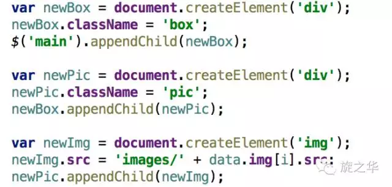
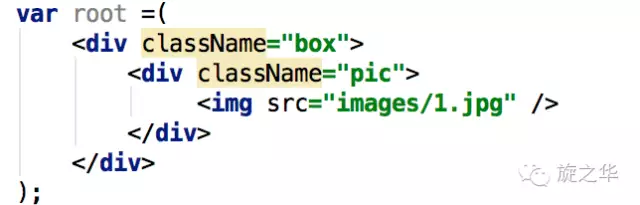
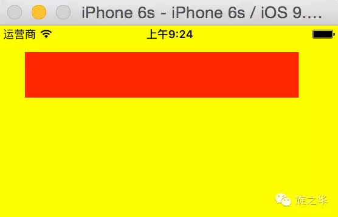
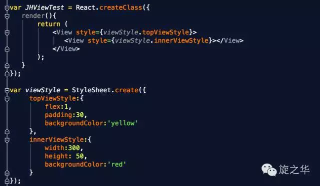

JSX和组件的概念
React的核心机制之一就是虚拟DOM：可以在内存中创建的虚拟DOM元素。React利用虚拟DOM来减少对实际DOM的操作从而提升性能。传统的创建方式是：

但这样的代码可读性并不好，于是React发明了JSX，利用我们熟悉的HTML语法来创建虚拟DOM：

在实际开发中，JSX在产品打包阶段都已经编译成纯JavaScript，JSX的语法不会带来任何性能影响。因此，JSX本身并不是什么高深的技术，可以说只是一个比较高级但很直观的语法糖。
View组件中常见的属性
React Native组件View，其作用等同于iOS中的UIView, Android中的android.view，或是网页中的<’div’>标签，它是所有组件的父组件。
Flexbox 弹性布局
Transforms 动画属性
backfaceVisibility enum(‘visible’, ‘hidden’) 定义界面翻转的时候是否可见
backgroundColor color
borderBottomColor color
borderBottomLeftRadius number
borderBottomRightRadius number
borderBottomWidth number
borderColor color
borderLeftColor color
borderLeftWidth number
borderRadius number
borderRightColor color
borderRightWidth number
borderStyle enum(‘solid’, ‘dotted’, ‘dashed’)
borderTopColor color
borderTopLeftRadius number
borderTopRightRadius number
borderTopWidth number
borderWidth number
vopacity number 设置透明度，取值从0-1；
overflow enum(‘visible’, ‘hidden’) 设置内容超出容器部分是显示还是隐藏；
elevation number 高度 设置Z轴，可产生立体效果。
View组件运用
下图就是View的基本运用：
在图中的render函数中，我们返回了一个顶层的View，然后View中包含着另一个子层的View。
在顶层的View中的style属性里面设置了其占满父控件，内边距为30，背景颜色为黄色 ；对应子层中的View的style属性中设置了宽度300，高度50，背景色为红色。 这是我们熟悉的css写法。
运行结果如下：

在React Native开发中，更加推荐我们采用StyleSheet来进行组件的布局，这样的话，代码在结构上会更加的清晰、也有利于后期维护。
下面我们采用StyleSheet来实现一下:

当然，在开发中会根据具体情况来灵活运用。
(本文转载自旋之华微信公众号)